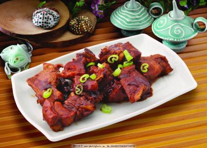

WonderCNF
WonderCNF
The food of flavor sweet
Sweet is one of the five flavors. It is the first flavor that our tongue can feel. It also means happiness in China.

The first dish is:
Sauce sparerib
Sauce sparerib is a han Chinese well-known traditional dishes for young and old. It has the beatiful red color, succulent crisp and strong fragrance. You can tastes the sweet and a little bit salty from it.
The second dish is:
Sweet-scented osmanthus sticky rice sugar lotus root
Sweet-scented osmanthus sticky rice sugar lotus root is one of the traditional Chiness style dessert in the south area of the Yangtze river.Glutinous rice, sweet osmanthus sauce and big jujube are in the lotus root. It has sweet, crisp taste and rich osmanthus fragrance.